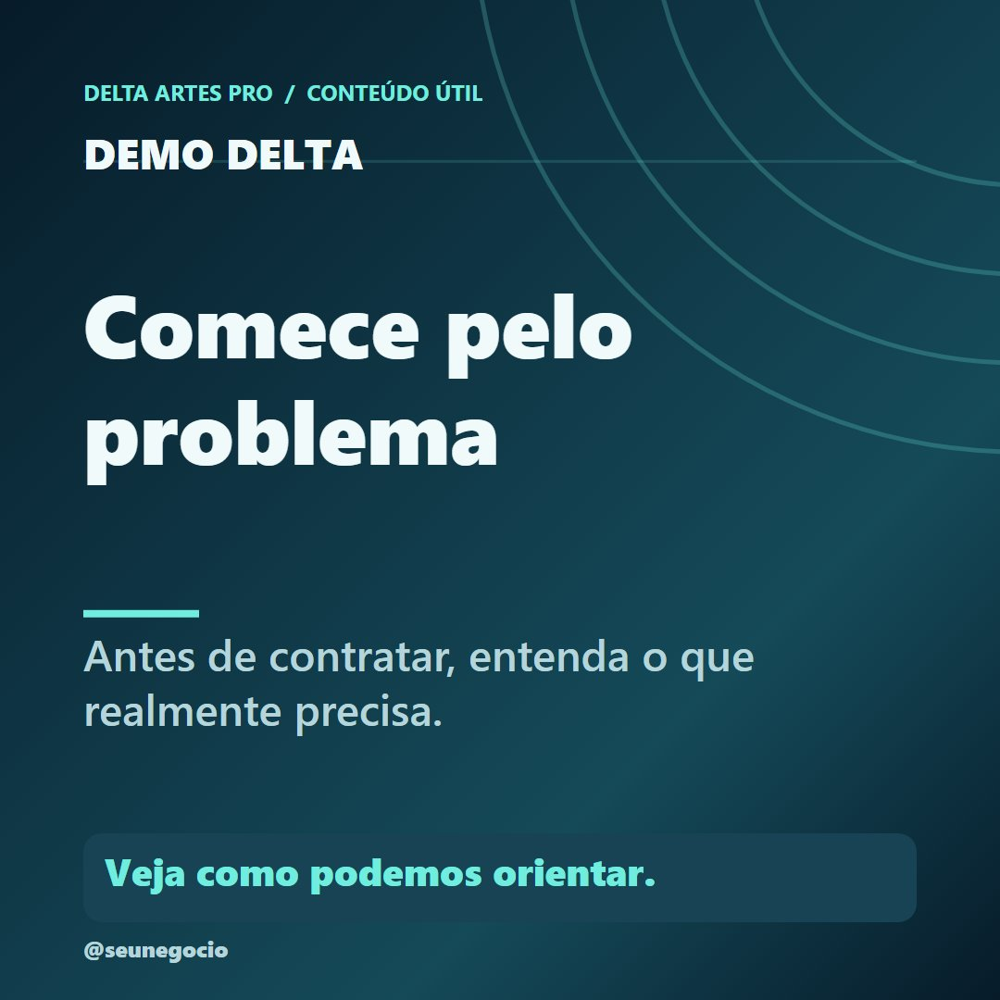
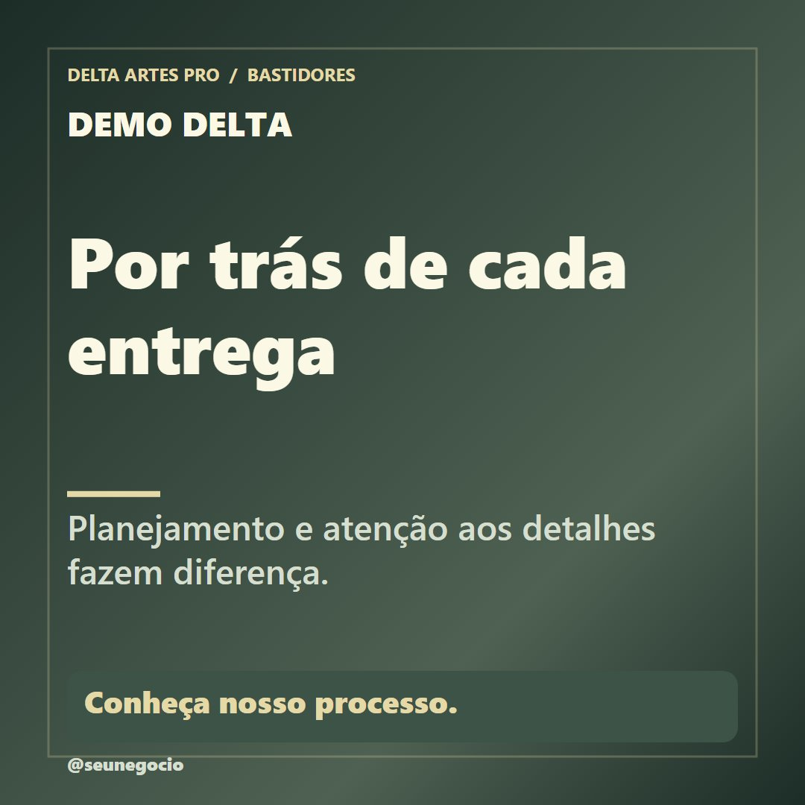
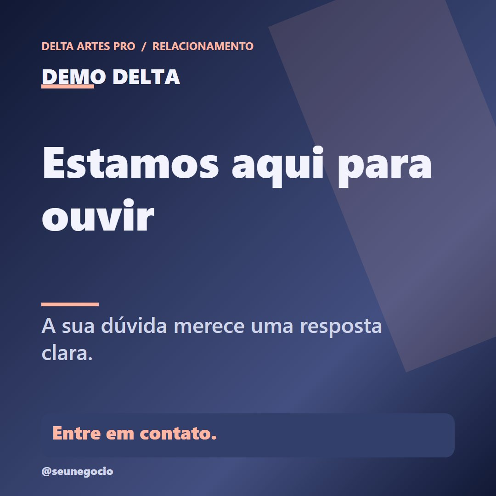
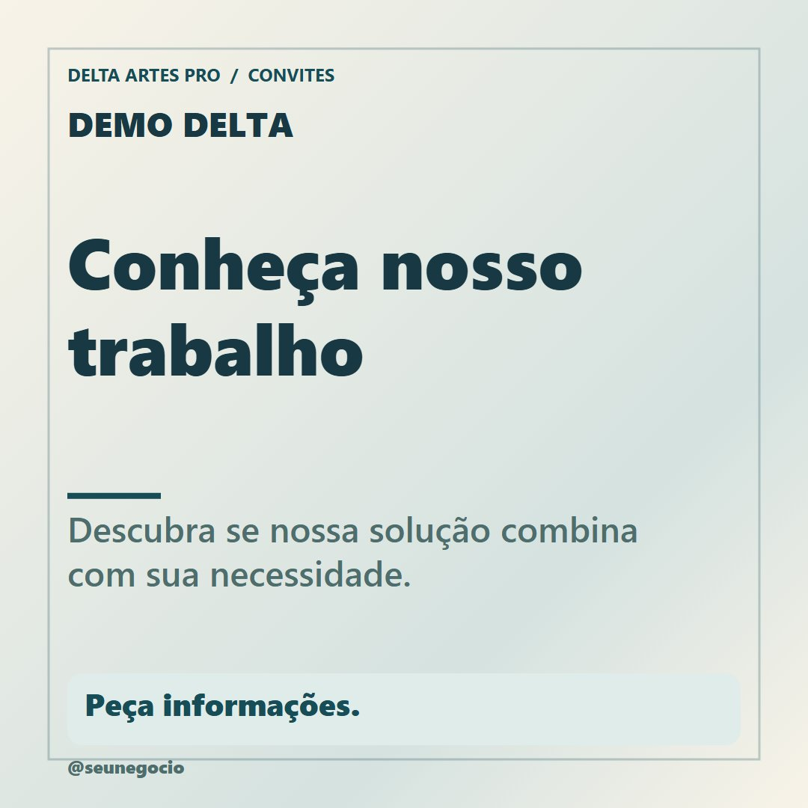
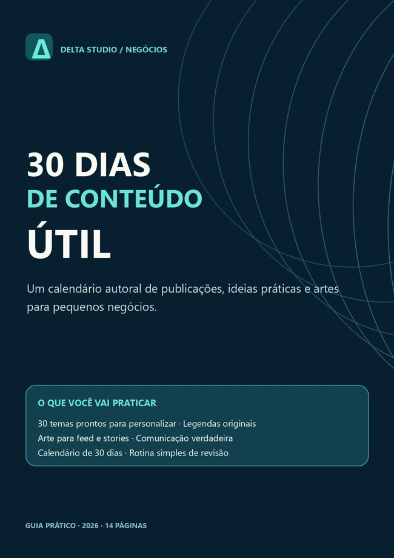

30 ideias. Uma identidade só sua.
Personalize artes tipográficas com textos, nome do negócio, cores e formato, depois exporte imagens PNG. Sem precisar criar tudo do zero. Revise cada informação antes de publicar manualmente.
Os exemplos são fictícios, não representam trabalhos feitos para clientes reais.

Crie conteúdo com ferramentas próprias.
Gerador offline de imagens
Canvas no navegador: feed quadrado 1080 × 1080, vertical 1080 × 1350 e stories 1080 × 1920.
30 ideias e calendário CSV
Temas em seis categorias, com sugestões editoriais e legendas originais para personalizar.
Guia PDF de 14 páginas
Um calendário de 30 dias com exemplos, revisão de informações, privacidade e rotina prática.
Seis imagens geradas e testadas.
A marca “DEMO DELTA” é fictícia. Os compradores poderão alterar seus próprios textos, cores e formatos.




30 dias de conteúdo útil.
O guia incluso possui 14 páginas de orientações e um calendário de cinco semanas. É material de apoio ao aplicativo, não um curso em vídeo.

Perguntas frequentes
Já está disponível para compra?
Ainda não. Este é um pré-lançamento informativo enquanto a área de membros e o checkout são preparados.
Funciona offline?
Sim. É um aplicativo local em HTML, CSS e JavaScript, aberto em navegador compatível. A exportação PNG e o calendário são salvos no seu dispositivo.
Posta automaticamente nas redes sociais?
Não. Você revisa, exporta e publica manualmente. Não existe integração com serviços externos.
Como obter suporte?
Escreva para suporte@deltamusic.com.br. Não compartilhe senhas, códigos de autenticação ou cartão.